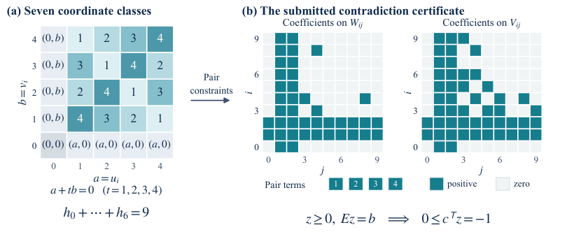
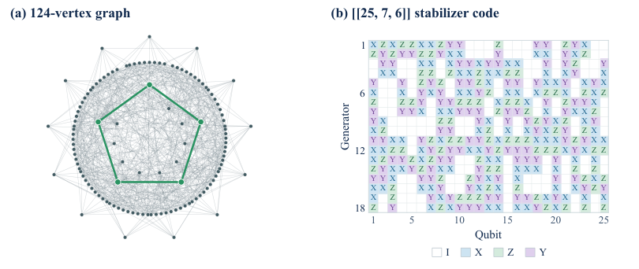

Benchmark whose theorem-proving, construction, and open-conjecture tasks are Lean 4 formalizations, with agent submissions checked by the Lean kernel.
Abstract
Can large language models (LLMs) advance theoretical computer science and resolve its long-standing open conjectures? To study progress toward this goal, we introduce TCSExam, a unified framework and benchmark covering the full range of TCS research. It evaluates theorem proving, solver engineering, and constructions alongside direct attempts to resolve open conjectures, capturing both concrete research accomplishments and progress toward long-standing research goals. TCSExam-Full contains 100 expert-reviewed tasks, with submissions checked by the Lean kernel or an executable task checker. TCSExam-Lite selects 20 tasks, five per track, reducing the number of task attempts by 80% at the same per-attempt budget. We evaluate eight agents on Full and nine on Lite. The TCSExam Index combines all four tracks: GPT-6 Astra leads Full (71.9), and Opus 5.5 leads Lite (72.3). Full and Lite rankings are strongly aligned across eight shared agents (Spearman's $ρ=0.93$), supporting Lite as a compact, discriminative benchmark. The evaluations yield improved solver outputs and mathematical constructions, together with independently verified special cases and bounds from open-conjecture attempts. TCSExam provides an extensible framework with task sources, Docker build recipes, and evaluation tools for reproducible use.
Problem
Existing benchmarks cover only selected parts of theoretical computer science research. There is no unified evaluation of whether LLM agents can prove research theorems, engineer solvers, produce constructions, and settle open conjectures.
Approach
TCSExam-Full has 100 expert-reviewed tasks in four tracks: 20 research theorems to prove in Lean 4, 30 solver-engineering problems, 20 constructions, and 30 open conjectures. Each conjecture is posed as Lean proof slots for the statement and its negation. Submissions are checked by the Lean kernel or by executable checkers, and scores combine into a weighted Index. A 20-task Lite subset cuts the number of task attempts by 80% at the same per-attempt budget.
Results
GPT-6 Astra leads Full with an Index of 71.9, completing 14 of 20 theorems. Opus 5.5 leads Lite with 72.3, and Full and Lite rankings agree closely (Spearman ρ=0.93). Agent runs improved several construction records and produced independently Lean-verified special cases of open conjectures, including a nine-dimensional Alon–Jaeger–Tarsi case over F5.

Figure 6: Astra’s proof certificate for the nine-dimensional Alon–Jaeger–Tarsi case over \mathbb{F}_{5} . (a) Coordinate pairs fall into seven classes; numbered cells give the unique nonzero t with a+tb=0 . Class counts sum to nine and yield pair constraints. (b) The actual certificate has nonnegative coefficients on two arrays of weight counts and four pair terms. Combined with the counting ident

Figure 5: Two constructions submitted by Kimi K3. (a) All 124 vertices and 630 edges of a graph with no 3- or 4-cycles, exceeding the 629-edge task reference. Green highlights a shortest cycle. (b) The 18 stabilizer generators of a [[25,7,6]] quantum code, improving the reference distance from 5 to 6. Each row specifies an operator on 25 qubits; white cells denote the identity I . Both panels are